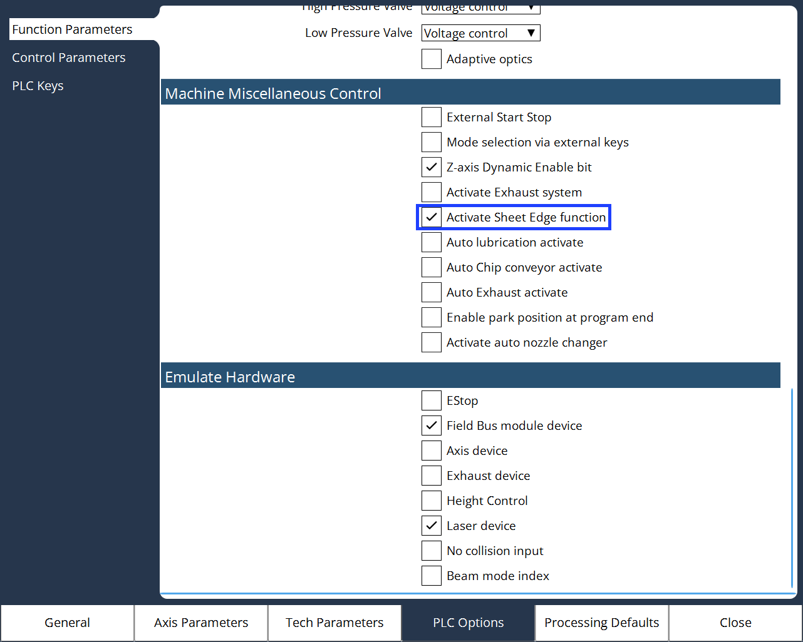
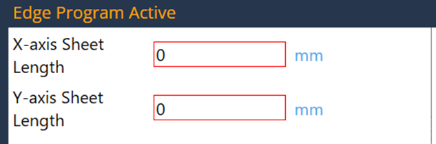

Élfelismerés
Az élfelismerési funkció a lemeztábla kezdőpontjának és forgásszögének kiszámítására szolgál.
A lemeztábla elforgatásának megfelelően el kell forgatni a program XY-síkját úgy, hogy a feladatok illeszkedjenek az elforgatott lemeztáblához.
Szintaxis: G17 D=Lemezforgatás-
A funkció engedélyezéséhez navigáljon ide: Konfigurálás → Gépbeállítások → PLC-beállítások → Működési paraméterek.
-
Engedélyezze a Táblaszél funkció aktiválása lehetőséget a Gép egyéb vezérlés részből.
 -
Lehetőség van az Élfelismerési funkció manuális programozására is.
-
Váltson a Vezérlők oldalra az Élfelismerés program kiválasztásához.

-
Az Élfelismerés program kiválasztásával a kezelőnek meg kell adnia a lemezhosszat az X- és az Y-tengely mentén az élek felismeréséhez.
 -
Az aktuális automatikus élfelismerési funkcióhoz (3 pontos élfelismerés), a kezelőnek pontosan meg kell adnia a lemez méretét és a vágófejet egyidejűleg pontosan a lap sarkához közel kell elhelyeznie. Ellenkező esetben az élfelismerés meghiúsulhat.
-
Az élfelismerési funkció futtatása után a program a kezdőpontba lép és a Z-tengelyt lefelé, a sarokba mozdítja, majd várakozik a a kezelő nyugtázására a program indításához.
-
A funkció engedélyezéséhez navigáljon ide: Konfigurálás → Gépbeállítások → PLC-beállítások → Vezérlőparaméterek.


-
Jelölje be a Lemeztábla kezdőpontjának nyugtázása jelölőnégyzetet.
-
Ha ez az opció ki van választva (ugyanaz, mint a jelenlegi viselkedés):
-
Mozgassa a fejet a kiindulási pontba.
-
Mozgassa a Z-tengelyt az alsó pozícióba.
-
Várja meg, amíg a kezelő nyugtázza a ciklus indítását.
-
-
Ha ez az opció nincs kiválasztva:
-
A vezérlődióda a kiindulási pontra kerül.
-
A program 3 másodperces szünetet (várakozást) tart.
-
Indítsa el a programot a folytatáshoz.
-